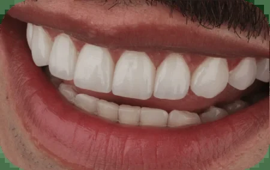

Smile design
In composite resin


Smile design
In ceromer


Smile design
In porcelain



Micro smile design
Micro smile design


These are smile design and micro smile design results from our own locations, grouped by the material they were made with. Not one of these photos is a stock image.

Message us on WhatsApp, tell us what you would like to change about your smile and we will tell you which option makes sense in your case. We are in Cúcuta and in Medellín.